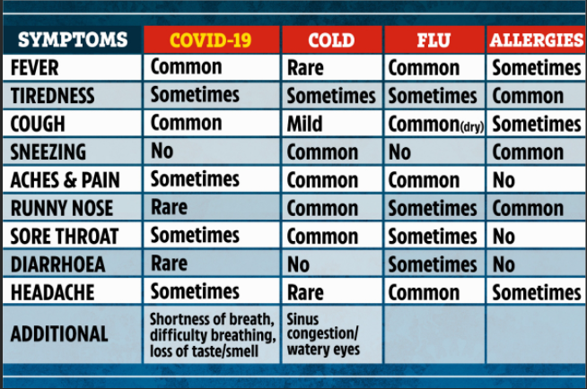
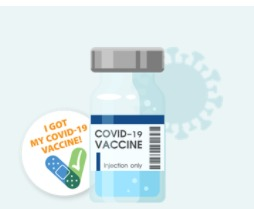

Covid-19
Statistics:
There are currently 384,771,241 confirmed cases and 5,715,399 deaths from the coronavirus COVID-19 outbreak as of February 02, 2022, 22:48 GMT.
In Lebanon, from 3 January 2020 to 5:13pm CET, 6 January 2022, there have been 740,814 confirmed cases of COVID-19 with 9,193 deaths, reported to WHO. As of 3 January 2022, a total of 4,650,164 vaccine doses have been administered. The reported case figures on a given date do not necessarily show the number of new cases on that day – this is due to delays in reporting. The actual number of cases is likely to be much higher than the number of confirmed cases
Symptoms:
People with COVID-19 have had a wide range of symptoms reported – ranging from mild symptoms to severe illness. Symptoms may appear 2-14 days after exposure to the virus. Anyone can have mild to severe symptoms. People with these symptoms may have COVID-19:
This list does not include all possible symptoms.Older adults and people who have severe underlying medical conditions like heart or lung disease or diabetes seem to be at higher risk for developing more serious complications from COVID-19 illness.
Difference Between Flu And Covid Symptoms
Safety and Precations:
Vaccination:
Get a vaccine to protect yourself, your loved ones and your community. Vaccines are effective at preventing severe illness and death from the coronavirus and the Delta variant. Get a vaccine booster shot as soon as it is recommended for you to increase your protection. Vaccines are safe and effective. Medical experts carefully tested the vaccines among thousands of adults with diverse backgrounds.
COVID-19 vaccines are effective at protecting you from getting sick even if you have had COVID-19. Vaccination is an important tool to help us get back to normal. This information will help you prepare for your COVID-19 vaccination.
Your Covid-19 Vaccine
- COVID-19 vaccines are safe and effective.
- Everyone 5 years and older is now eligible to get a free COVID-19 vaccination.
- Learn about the different vaccines available.
- Learn about the different vaccines available.
- CLICK BELOW TO PLACE YOUR APPOINTMENT NOW!
Testing:
Who should get tested
The following people should get tested for COVID-19:
- People who have symptoms of COVID-19.
- People who have come into close contact with someone with COVID-19 should be tested to check for infection at least 5 days after they last had close contact with someone with COVID-19. The date of the last close contact is considered day 0.
- People who are not up to date with their COVID-19 vaccines who are prioritized for expanded community screening for COVID-19.
- People regardless of vaccination status who have been asked or referred to get testing by their school, workplace, healthcare provider, state, tribal, localexternal icon or territorial health department.
How you should get tested
- Visit your state, tribal, localexternal icon, or territorial health department’s website to look for the latest local information on testing.
- Visit your healthcare or public health department clinic provider to get a self-collection kit or self-test.
- You and your healthcare provider might consider either self-collection kit or a self-test if you have symptoms of COVID-19 and can’t get tested by a healthcare provider.
Results
If you test positive for the virus that causes COVID-19, take the following steps to protect others regardless of your COVID-19 vaccination status:
- Isolate yourself
- Wear a well-fitting mask around others at home
- Contact your healthcare provider
If you test negative for the virus that causes COVID-19, the virus was not detected.
- You may have received a false negative test result and still might have COVID-19. You should isolate away from others.
- Contact your healthcare provider about your symptoms, especially if they worsen, about follow-up testing, and how long to isolate.